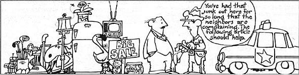

Finding a suitable "zoo" to buy your "white elephant" may not be as difficult as you think!
Almost all of us - at one time or another - will find ourselves in possession of items for which we have no real use. Now one of the most popular ways of disposing of such "white elephants" is to hold a garage sale. But before following that plan of action, you should know that some of the items regularly disposed of at these events could be turned over for a much larger profit . . . if their owners knew who to sell them to.
The fact is, you can name just about any class of objects - rocks, matchbook covers, empty bottles, paperback books - and odds are (especially if it's reasonably old) that somebody would be interested in adding it to a collection. The spectrum of items sought by collectors is far broader than most people realize!
For example, a recent issue of the Antique Trader contained ads from individuals who wanted to buy - among other things - old fishing reels, pre-1942 BB guns, feed sacks, Maltese Cross butter molds, thimble holders, Navaho rugs, insurance company signs, antique clothing, Boy Scout patches, bus tokens, books about tropical fish, corkscrews, children's pedal tractors, bread end labels, paper dolls, wooden duck decoys, doorknobs, and pre-1955 Hawaiian shirts. As you can see, many of these items are exactly the sort of "junk" one expects to pick up (or sell) dirt cheap at a rummage sale or flea market. That's because to most folks, such goods are all but worthless.
Therefore, in order to get the best price for your white elephants, you'll have to reach the individuals who'll value them most. For instance, a lot of folks would likely throw away an empty "Soul Mellow Yellow" beer can if they found one when - say - cleaning the basement. But according to Thomas Toepfer - author of the American Beer Can Encyclopedia - that container could be worth $200 to a collector. And the child next door might offer you a quarter for an old Marlo Thomas doll . . . but find the right buyer, and the toy may bring as much as $125. Even something as seemingly ordinary as a souvenir blanket that's been passed down in your family could turn out to be more valuable than you'd imagine. For example, I once saw a pre-1900 Navaho blanket sell for $12,000 at an auction.
COLLECTOR'S NOTES
Of course you'll have to do a little research in order to locate folks who might have a special interest in your potential collectibles. And a good way to begin is to look through a publication that serves their particular interests. Some of these magazines cover a wide range of items, while others limit their content to a specific category. Here's a sampling of such periodicals. (A public library will likely have - or be able to obtain, on loan - copies of many of them.)
A B BOOKMAN'S WEEKLY
Dept. TMEN
P.O. Box AB
Clifton, New Jersey 07015
(books)
AMERICAN BOOK COLLECTOR
Dept. TMEN
274 Madison Avenue
New York, New York 10016
(books)
AMERICAN COLLECTOR
Dept. TMEN
P.O. Drawer C
Kermit, Texas 79745
(all types of collectibles)
AMERICAN FILM
Dept. TMEN
John F. Kennedy Center
Washington, D.C. 20566
(movie memorabilia)
THE ANTIQUE TRADER WEEKLY
Dept. TMEN
P.O. Box 1050
Dubuque, Iowa 52001
(all types of collectibles)
BASEBALL HOBBY NEWS
Dept. TMEN
P.O. Box 128-D
Glen Cove, New York 11542
(baseball cards and related items)
THE BUYER'S GUIDE FOR COMIC FANDOM
Dept. TMEN
15800 Rt. 84 North
East Moline, Illinois 61244
(comic books)
CLASSIC IMAGES
Dept. TMEN
P.O. Box 4079
Davenport, Iowa 52808
(movie memorabilia)
THE COIN SLOT
Dept. TMEN
P.O. Box 612
Wheatridge, Colorado 80034
(gumball and other coin-operated machines)
COLLECTORS MART
WEB Publications
Dept. TMEN
P.O. Box 12830
Wichita, Kansas 67277
(all types of collectibles)
COLLECTOR'S NEWS
Dept. TMEN
P.O. Box 156
Grundy Center, Iowa 50638
(all types of collectibles)
COLLECTOR'S SHOWCASE
Dept. TMEN
P.O. Box 6929
San Diego, California 92106
(toys, advertising, other items)
DEPRESSION GLASS DAZE
Dept. TMEN
12135 North State Road, Box 57
Otisville, Michigan 48463
(depression glass and china)
DOLL CASTLE NEWS
Dept. TMEN
P.O. Box 247
Washington, New Jersey 07882
(dills)
THE DOLL TIMES
Dept. TMEN
1675 Orchid
Aurora, Illinois 60505
312/820-0019
(dolls)
FILM COLLECTOR'S WORLD
Dept. TMEN
P.O. Box 248
Rapids City, Illinois 61278
(films, movie memorabilia, video cassettes)
THE GLAZE
Dept. TMEN
P.O. Box 4929-GS
Springfield, Missouri 65804
(dinnerware, pottery, glass)
GOLDMINE
Dept. TMEN
P.O. Box 187
Fraser, Michigan 48026
(phonograph records)
HEMMINGS MOTOR NEWS
Dept. TMEN
Box 100
Bennington, Vermont 05201
(old car literature and parts)
LOOSE CHANGE MAGAZINE
Dept. TMEN
Mead Publishing Corporation
21176 South Alameda Street
Long Beach, California 90810
(coin-operated machines)
MINIATURE COLLECTOR
Dept. TMEN
170 Fifth Avenue
New York, New York 10010
(miniature dollhouses and related items)
NOSTALGIA WORLD
Dept. TMEN
P.O. Box 231
North Haven, Connecticut 06473
(all types of collectibles)
THE OLD BOTTLE MAGAZINE
Dept. TMEN
Box 243
Bend, Oregon 97701
(old bottles and insulators)
OLD CARS WEEKLY
Dept. TMEN
700 East State Street
Iola, Wisconsin 54990
(automobile sales literature, advertisements, other items)
PAPERBACK MARKET
Dept. TMEN
5813 York Avenue South
Edina, Minnesota 55410
(paperback books)
RAGGEDY ANN REVIEW
Dept. TMEN
4781 Aberdeen Road
Mound, Minnesota 55364
(dolls and other toys)
RARITIES
Miller Magazines, Inc.
Dept. TMEN
17337 Ventura Boulevard
Encino, California 91316
(various collectibles)
SCOTT'S MONTHLY STAMP JOURNAL
Dept. TMEN
3 East 57th Street
New York, New York 10022
(stamps)
SPORTS COLLECTOR'S DIGEST
Dept. TMEN
700 East State Street
Iola, Wisconsin 54990
(sports memorabilia)
VIDEO ENTERTAINMENT
Dept. TMEN
30691 Utica Road
Roseville, Michigan 48066
(video cassettes of movies, TV shows, rock concerts)
THE WRAPPER
Dept. TMEN
309 Iowa Court
Carol Stream, Illinois 60187
(nonsports gum cards and related items)
READY REFERENCES
You'll also find a large assortment of price guides and other reference material in your local library that can help you determine the value of your "junk". For example, did you know that the picture sleeves from some 45-RPM records are worth more than the disks themselves . . . or that most general-interest magazines of the 1970's (and earlier) commonly sell for about 25 cents to $1.00 each, while many of the automobile advertisements inside those same periodicals could bring you more than $3.00 apiece?
The following lineup of titles includes a good number of the more popular reference works:
American Beer Can Encyclopedia by Thomas Toepfer
The American Postcard Guide to Tuck by Sally S. Carver
American Premium Guide to Coin Operated Machines: Identification and Values by Jerry Ayliffe
Clock Guide: Identification With Prices (Book 2) by Robert W. Miller
Collectibles: The Nostalgia Collector's Bible by Bert R. Sugar
Collecting Toys: A Collector's Identification & Value Guide by Richard O'Brien
The Collector's Encyclopedia of Barbie Dolls and Collectibles by Sibyl DeWein and Joan Ashabraner
Collector's Encyclopedia of Buttons by Sally Luscomb
Collector's Encyclopedia of Depression Glass by Gene Florence
The Comic Book Price Guide by Robert M. Overstreet
Flea Market Handbook by Robert G. Miner
Graniteware Identification and Value Guide by Fred and Rose Booher
Greenberg's Price Guide to Lionel Trains by Bruce Greenberg
The Investor's Guide to American Convertible and Special-Interest Automobiles, 1946-1976 by Charles Webb
Norman Rockwell Art and Collectibles: Identification and Values by Carl F. Luckey
The Official Price Guide to Collectible Rock Records by Randall C. Hill
Old Advertising by Jim Cope
One Thousand Fruit Jars by Bill Schroeder
Original Record Collectors Price Guide: Record Album Price Guide by Jerry Osborne and Bruce Hamilton
The Paperback Price Guide by Kevin Hancer
Patricia Smith's Doll Values, Antique to Modern by Patricia Smith
Planter's Peanuts Collectibles With Current Prices by Richard Reddock
The Sport Americana Baseball Card Price Guide (No. 2) by James Beckett and Dennis W. Eckes
The Teddy Bear Catalog by Peggy and Alan Bialosky
Wallace-Homestead Price Guide to American Country Antiques by Don and Carol Raycraft
The Warner Collectors' Guide to American Quilts by Phyllis Haders
Actually, although price guides are useful in determining the approximate value of any collectibles that you may have to sell, the condition of the items - and the current demand - will also affect their market price. And naturally, you just won't find some valuable things listed in the reference books at all. The best way to determine the worth of obscure, less popular collectibles is to read the classified advertising sections of collector publications.
Conventions for collectors offer lots of opportunities for sellers to reach potential buyers, too. Such events are held throughout the country, and usually focus on just one kind of item (perhaps dolls, records, movie memorabilia, or comic books) . .. although some conventions will feature a broad range of goods. Again, the various publications listed here will help you find out when and where such gatherings are held.
Discovering "where to go with what you've got" can be, itself, the start of a very interesting hobby . . . one that might take you beyond the limits of merely cleaning out your attic (perhaps to cleaning out other folks' clutter in search of "old gold"). Just remember that whether an object is considered "junk" or a "jewel" depends solely on who is looking at it, and on the price that person is willing to pay.
|
 |
|
|